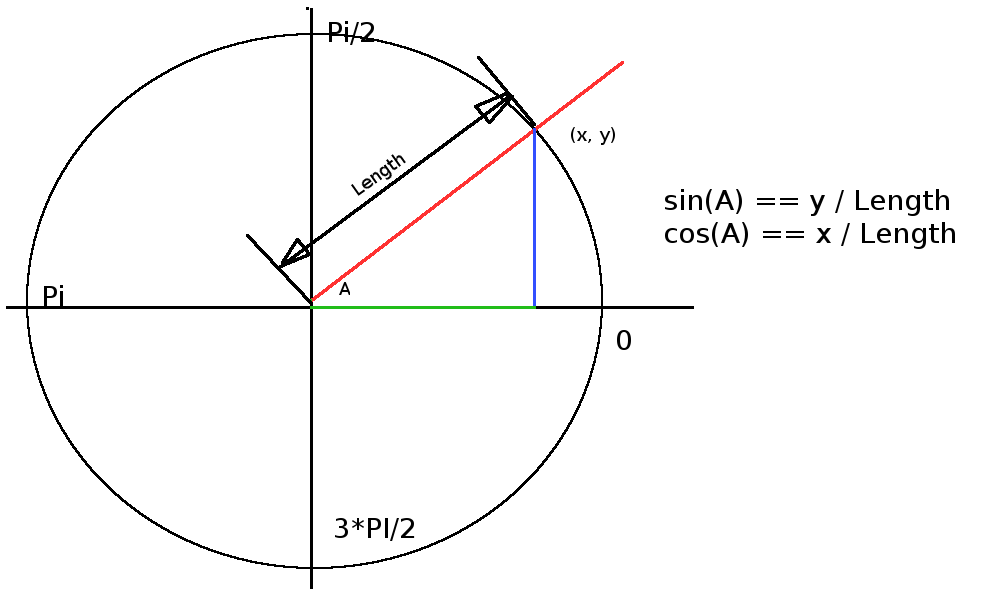

Playing Around With Guilloche Patterns
Now that we have a rectangular path as a function of t, we need to make a wheel to spin our "pen" around on as a function of t. How? Remember sin() and cos() from high school geometry. 
sin(A) == Y / Length == "how much y", so y == length * sin(A)
cos(A) == X / Length == "how much x", so x == length * cos(A)